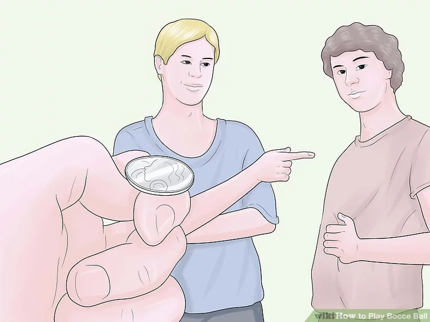
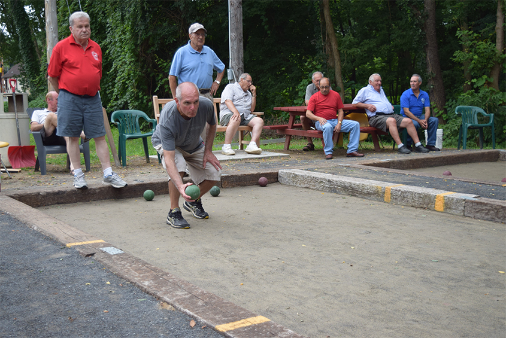

BOCCE BALL
HOW TO PLAY ?
Bocce ball, also called bocci or boccie, is a relaxed but strategic game with an ancient lineage. Although probably emerging from ancient Egypt, bocce started to hit its stride with the Romans and Emperor Augustus. It gained massive popularity with the influx of Italian immigrants at the turn of the 20th century. Today, bocce is a calming, competitive way to spend a few hours outdoors in the pleasant company of friends.
Download Instructions
For Saving Instructions Offline Click The Button Below
downloadInstructions
1 Flip a coin or randomly decide which team gets to throw out the jack.
- It doesn't much matter who gets to go first, as teams alternate throwing out the jack at the beginning of each new frame.
2 Throw out the jack into a prescribed zone.
- The team that won the coin toss or was randomly selected to start gets two opportunities to throw the jack into a zone 5 m (~16 feet), which ends 2.5 m (~8 feet) from the endboard of the court. If the team that first throws the jack fails to get the jack into the prescribed zone, the second team gets to throw out the jack.
- An alternate set of rules says that the jack need only travel past a regulator pin that marks the middle of court.
- If you're not playing bocce on a court, feel free to throw the jack wherever, provided that it's far enough away from players so that gameplay doesn't become too easy.
3 After the jack is successfully thrown, throw out the first bocce ball.
.jfif)
- The team that threw out the jack is responsible for throwing out the first bocce ball. The aim is to get the bocce ball as close to the jack as possible. Players who throw out the bocce ball must stand behind the fault line, which is approximately 10 feet (3.0 m) above the bottom of the baseboard.
- There are several ways to throw a bocce ball. Most tend to throw the bocce underhanded, with their palm cupping the underside of the ball, and either lobbing the ball higher into the air or bowling the ball from closer to the ground. Some, however, choose to throw the ball cupping it from the top instead of from the bottom, and lobbing it the same way they would have an underhand throw.
4 Let the second team bowl their bocce ball.
.jfif)
- The team which hasn't yet bowled gets a chance to now. One player from their team bowls, trying to get the ball as close to the jack as possible.
5 Decide which team gets to continue bowling all their remaining bocce balls.
.jfif)
- The team whose bocce ball is farthest away from the jack now gets to bowl its remaining three bocce balls in succession, each time trying to get as close to the jack as possible. (Note: International rules always give the next bowl to the team farthest from the jack as opposed to the rules outlined here).
- It is acceptable to hit the jack when bowling with a bocce. The only practical effect of hitting the jack is that is readjusts the nucleus of where you want to aim.
- If the bocce ball is touching the jack, it's typically called a "kiss" or "baci."[3] This throw is usually worth two points if the bocce ball remains touching the jack at the end of the frame.
6 Allow the team who hasn't completed their throws to bowl out.
.jfif)
- At the end of the frame, all 8 bocce balls should be clustered at various distances around the jack.